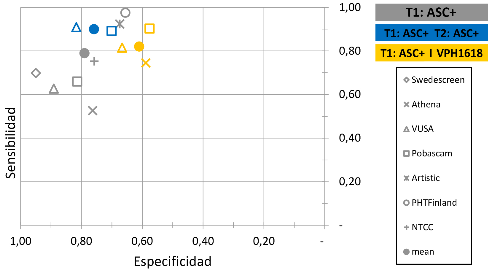

Seguimiento de mujeres positivas para el VPH con un resultado negativo de triaje
Para completar una ronda de cribado, las mujeres positivas en el cribado y negativas en la prueba de triaje no deben ser derivadas directamente al cribado regular, sino que está indicado realizar un seguimiento a corto plazo en función del riesgo de desarrollar una lesión precancerosa. Los posibles algoritmos pueden depender de la prueba de triaje inicial utilizada en las mujeres con un resultado positivo de VPH.
¿Lo sabías?
La realización de pruebas adicionales en mujeres con un resultado positivo al VPH, pero negativo en el triaje en un periodo de tiempo más corto, es más sensible que volver a mandar a las mujeres al cribado habitual (es decir, se perderán menos mujeres con enfermedad), aunque suele suponer una pérdida de especificidad (es decir, se derivan más mujeres a pruebas innecesarias).
En cuanto a las recomendaciones anteriores, cuando se utiliza la citología como prueba de triaje, la repetición de la citología en el seguimiento es la única estrategia que resultó más sensible pero no supuso una pérdida significativa de especificidad respecto a no realizar seguimiento.
La siguiente figura muestra la sensibilidad y la especificidad de tres estrategias de triaje extraídas de siete estudios claves que compararon el cribado del VPH con la citología[1,15–17]: citología refleja ASC-US+ (gris), cotest reflejo con citología y genotipado del VPH 16/18 (amarillo) y citología réflex ASC-US+ al inicio y al seguimiento (azul). Los símbolos con relleno representan los valores medios mientras que los demás símbolos representan los valores de los estudios individuales.
FIGURA 5 Sensibilidad y especificidad de tres escenarios para el triaje de mujeres positivas al VPH de alto riesgo
Tal como se describe en los datos del metaanálisis, la repetición de la citología (ASC-US+) en una visita de triaje posterior a los 6-12 meses, genera un aumento de la sensibilidad (+10-15%) para CIN2 (punto azul), en comparación con el cribado citológico solo (punto gris) a cambio de una pérdida limitada de especificidad. Sin embargo, la adición del genotipado del VPH 16/18 al triaje de citología réflex (punto amarillo) produce una pequeña mejora de la sensibilidad de la citología sola pero resulta en una pérdida considerable en la especificidad.
En el ejemplo anterior, cabe señalar que esta evidencia se ha generado en países con programas de citología bien implantados y puede no ser representativa de todos los países o de aquellos en los que la calidad de la citología no se puede asegurar. Para más información sobre las limitaciones de la citología, consultar el módulo 3.
Todo seguimiento que requiera visitas adicionales en lugar de la derivación directa a la colposcopia puede traducirse en un cierto grado de perdida de seguimiento o abandono. Cuando este abandono es importante, se pueden favorecer escenarios de triaje reflejo más sensibles, como la citología réflex combinada con el genotipado del VPH 16(18).